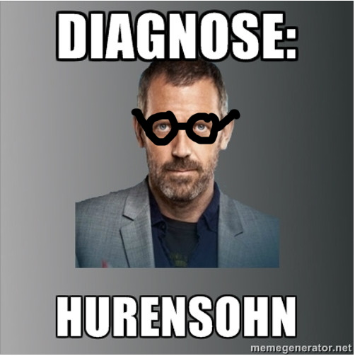

Willkommen auf der Hurensohn.net Website!
Auf dieser Website findest du coole Bilder, Videos Gifs und Musik!
Hurensohn gilt traditionell als eine besonders schwerwiegende Beleidigung, da sie sich nicht nur gegen den Beleidigten selbst, sondern auch gegen die Familienehre, speziell die Ehre der Mutter, richtet. Früher waren damit im deutschen Sprachraum allerdings nicht ausschließlich die Söhne von Huren, sondern auch uneheliche Kinder gemeint, bei denen die Mutter den Vater nicht angeben wollte oder konnte. (Siehe auch: Kind und Kegel) In der Jugendsprache wird die Bezeichnung seit den 1990er Jahren in der Regel unabhängig vom familiären Hintergrund verwendet. Es kann sich situationsabhängig um eine Provokation bis hin zu einer schweren Anfeindung handeln, allerdings wird es auch oftmals sarkastisch verwendet. Abgekürzt wird sie als Huso.[1] Entsprechende Beleidigungen sind auch in anderen Sprachen geläufig, z. B.: engl. son of a bitch (abgekürzt SOB).